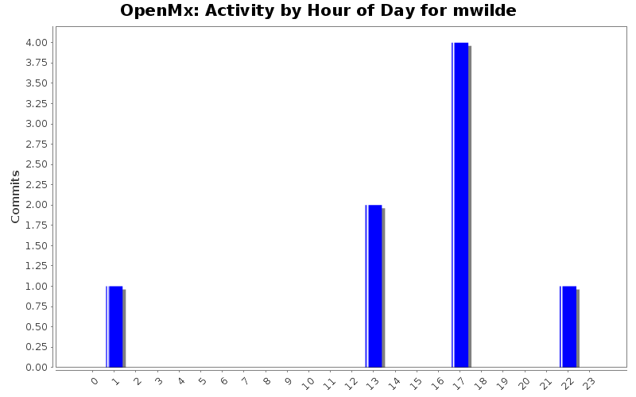
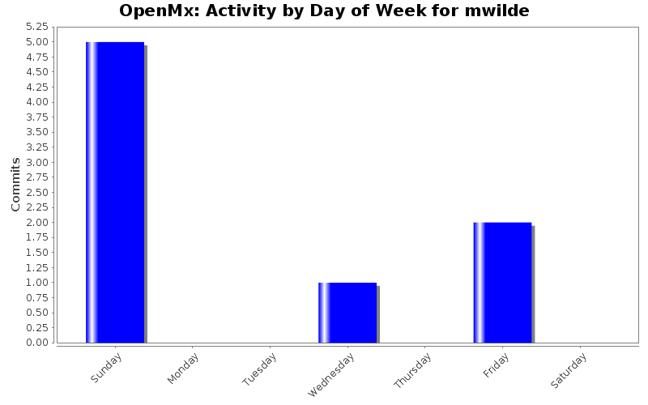
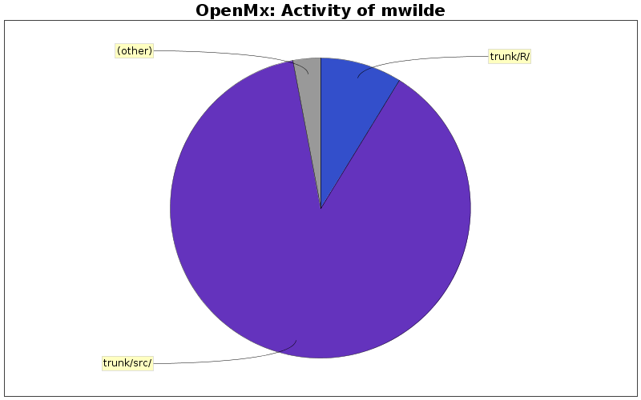

| Directory | Changes | Lines of Code | Lines per Change |
|---|---|---|---|
| Totals | 8 (100.0%) | 34 (100.0%) | 4.2 |
| trunk/src/ | 4 (50.0%) | 30 (88.2%) | 7.5 |
| trunk/R/ | 1 (12.5%) | 3 (8.8%) | 3.0 |
| trunk/ | 1 (12.5%) | 1 (2.9%) | 1.0 |
| trunk/inst/npsol/windows/x86_64/rtools2.12/ | 1 (12.5%) | 0 (0.0%) | 0.0 |
| trunk/inst/npsol/windows/x86/rtools2.12/ | 1 (12.5%) | 0 (0.0%) | 0.0 |

Add 2.12 version of 32 bit npsol dll.
0 lines of code changed in 1 file:
Initial revision of 64 bit windows libnpsol
0 lines of code changed in 1 file:
Initial Swift hook in omxLapply() - currenly activated only when Swift package is loaded, and then only for mxRun calls.
4 lines of code changed in 2 files:
Added very simplistic error response for matrix inversion failure.
30 lines of code changed in 4 files: